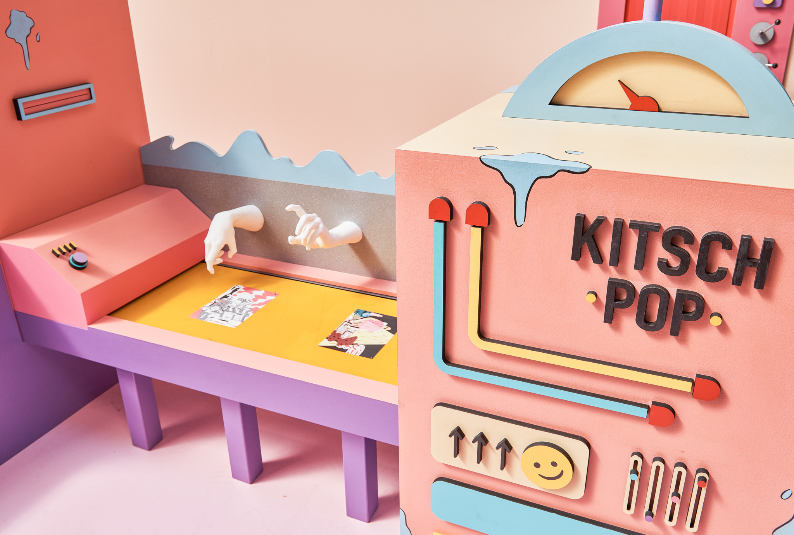
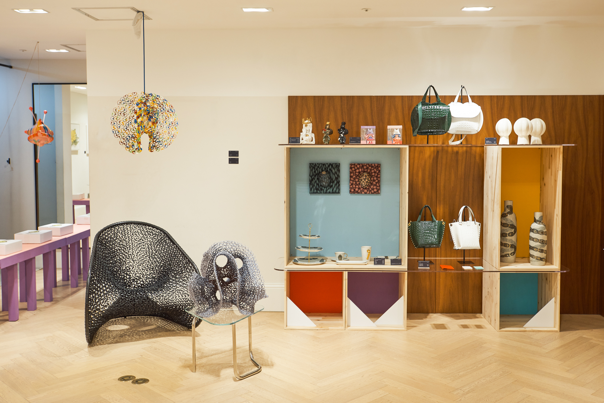

서울문화재단 유망예술가 초청 전시 < 예술해독제>

서울문화재단은 코로나19로 지친 예술가와 시민을 치유한다는 의미의 전시 < 예술해독제>를 2020년 10월 06일부터 10월 31일(토)까지 롯데백화점 강남점에서 개최하였다.
지난 전시를 언급한 이유는 좋은 의도로 기획된 전시를 모든이에게 알리고 하는 바와 이러한 전시가 더욱 많이 기획되기를 바라는 마음에서 소개하는 바이다.

키치팝(도파민최, 정경우) < KF-94 FACTORY >
키치팝(도파민최, 정경우) < KF-94 FACTORY 4호기 >
신당창작아케이드 입주작가인 키치팝(도파민최, 정경우)팀이 제작한 길이 6m, 높이 3m 규모의 대형 예술작품인
3층 특별매장 전경
3층 특별매장에는 신당창작아케이드 소속 작가 18명의 작품 150여 점을 한 자리에서 구매할 수 있는 ‘KF-AD CRAFT’가 열렸다. 언택트 시대를 맞아 집안에 어울리는 가구, 테이블, 소반, 식기류부터 보석 등 다양한 작품이 선보이며, 현장에서 즉시 구매할 수가 있었다.
“코로나19의 장기화로 인해 지쳐있을 시민을 위해 기획된 이 전시는 많은 작가들에게도 창작활동을 이어가는 원동력이 될 수 있는 기회가 되었다”라고 전해졌다.